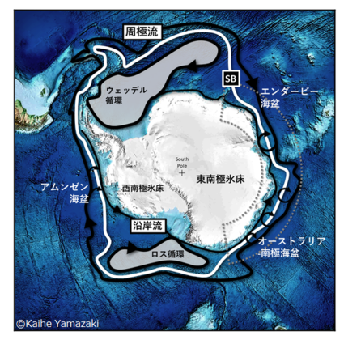

興味のあるテーマ
・南極海陸棚域における水塊交換過程
・大気ー海洋ー雪氷圏システム

南大洋が駆動する海洋大循環
南大洋は、全球的な海洋深層循環（海洋子午面循環とも）の中核を担っている。そこでは、世界一重く巨大な水塊である南極底層水が産出される。これは、南極大陸付近の水が極端に冷やされるために起こる。南大洋では、冷やされた海水が沈み込むだけではなく、子午面循環の経路を閉じるようにして、深層水が湧昇してくる。子午面循環は、地球上の熱と炭素の輸送という点で、気候にとって非常に重要である。
気候変動に関する政府間パネルの第5次評価報告書によると、1992年から2005年にかけて海洋底層は温暖化した可能性が高く、そのうち最も大きな温暖化は南大洋（南極海）で観測されている。静穏な深海底においてこの変化は劇的であるが、原因については未だ解明されていない。
子午面循環の模式図。From Descriptive Physical Oceanography 6th edition.
海洋が融かす南極の氷
雪氷圏（Cryosphere）は固体の水（つまり氷）が存在する領域として定義される。氷もまた、全球の気候システムにおいて本質的な役割を果たしている。南大洋は南極氷床に接している。南極氷床は海水位上昇に換算すると60mに匹敵する、巨大な淡水のリザーバーである。現状の海水位上昇予測の不確定性を縮小させるためには、海洋の振る舞いに対する南極氷床の応答の評価が、最も肝心である。
ここでポイントとなるのが、沖合からきて大陸棚上に流入してくる暖水である。このプロセスは、棚氷（海に浮いた氷床の末端）を融かすだけでなく、陸棚上の水塊特性（水温・塩分）を変質させることを通じて、子午面循環にも影響を及ぼす。
Credit: Michael Van Woert, National Oceanic and Atmospheric Association (NOAA) NESDIS, ORA. From NSIDC.
亜寒帯循環：南大洋と棚氷の仲介人
南大洋における亜寒帯循環は、北側にある南極周極流（東向き）と、南側にある南極沿岸流（西向き）によって特徴づけられる。この時計回りの循環は、極側の冷たい水を、沖合の暖かい水から隔てる存在である。したがって、陸棚への暖水流入過程を考えるうえで、亜寒帯循環の動態には中心的な関心がある。
